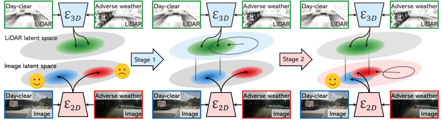
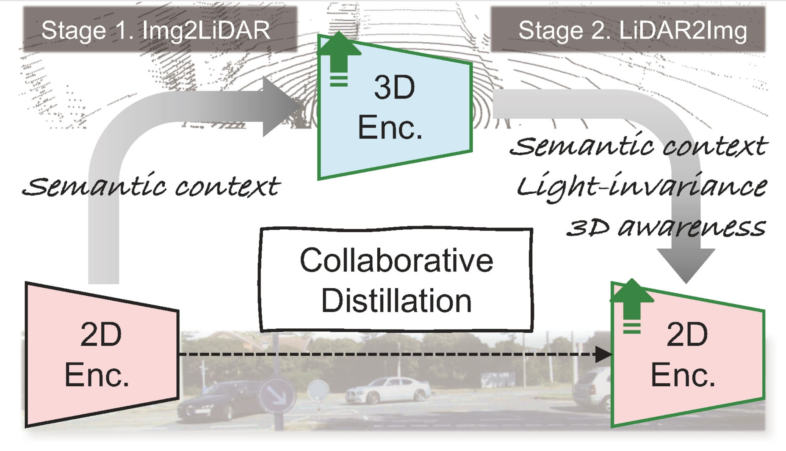

Kim Ji-Yeon
I am a Ph.D. student at POSTECH, advised by Prof. Tae-Hyun Oh.
My research focuses on reconstructing and generating interactive 3D human models,
especially human-object interaction.
Email: jiyeon.kim [at] postech [dot] ac [dot] kr
Publications

CLIP-Actor-X: Text-driven 4D Human Avatar Generation via Cross-modal Synthesis-through-Optimization
Kim Youwang*, Taehyun Byun*, Kim Ji-Yeon, Sungjoon Choi, Tae-Hyun Oh
TPAMI 2026|Minister's Award @ ICT Paper Awards
Kim Youwang*, Taehyun Byun*, Kim Ji-Yeon, Sungjoon Choi, Tae-Hyun Oh
TPAMI 2026|Minister's Award @ ICT Paper Awards

LiDAR-Anchored Collaborative Distillation for Robust 2D Representations
Wonjun Jo, Hyunwoo Ha, Kim Ji-Yeon, Hawook Jeong, Tae-Hyun Oh
RA-L 2026
Wonjun Jo, Hyunwoo Ha, Kim Ji-Yeon, Hawook Jeong, Tae-Hyun Oh
RA-L 2026

Self-Supervised Collaborative Distillation: Enhancing Lighting Robustness and 3D Awareness
Wonjun Jo, Hyunwoo Ha, Kim Ji-Yeon, Hawook Jeong, Tae-Hyun Oh
ICCVW 2025
Wonjun Jo, Hyunwoo Ha, Kim Ji-Yeon, Hawook Jeong, Tae-Hyun Oh
ICCVW 2025

The Devil is in the Details: Simple Remedies for Image-to-LiDAR Representation Learning
Wonjun Jo, Kwon Byung-Ki, Kim Ji-Yeon, Kyungdon Joo, Hawook Jeong, Tae-Hyun Oh
ACCV 2024
Wonjun Jo, Kwon Byung-Ki, Kim Ji-Yeon, Kyungdon Joo, Hawook Jeong, Tae-Hyun Oh
ACCV 2024
Uni-DVPS: Unified Model for Depth-Aware Video Panoptic Segmentation
Kim Ji-Yeon, Oh Hyun-Bin, Kwon Byung-Ki, Dahun Kim, Youngjin Kwon, Tae-Hyun Oh
RA-L 2024|Oral presentation @ IROS 2024
Kim Ji-Yeon, Oh Hyun-Bin, Kwon Byung-Ki, Dahun Kim, Youngjin Kwon, Tae-Hyun Oh
RA-L 2024|Oral presentation @ IROS 2024

MinDVPS: Minimal Model for Depth-aware Video Panoptic Segmentation
Kim Ji-Yeon, Oh Hyun-Bin, Dahun Kim, Tae-Hyun Oh
CVPRW 2023
Kim Ji-Yeon, Oh Hyun-Bin, Dahun Kim, Tae-Hyun Oh
CVPRW 2023
CLIP-Actor: Text-Driven Recommendation and Stylization for Animating Human Meshes
Kim Youwang*, Kim Ji-Yeon*, Tae-Hyun Oh
ECCV 2022|AI4CC Workshop @ CVPR 2023|Qualcomm Innovation Fellowship Winner
Kim Youwang*, Kim Ji-Yeon*, Tae-Hyun Oh
ECCV 2022|AI4CC Workshop @ CVPR 2023|Qualcomm Innovation Fellowship Winner

Unified 3D Mesh Recovery of Humans and Animals by Learning Animal Exercise
Kim Youwang, Kim Ji-Yeon, Kyungdon Joo, Tae-Hyun Oh
BMVC 2021
Kim Youwang, Kim Ji-Yeon, Kyungdon Joo, Tae-Hyun Oh
BMVC 2021
Awards & Honors
- Best Paper Award at Korean Robotics Society Annual Conference (KRoC), 2024
- Minister's Award at Electronics Times ICT Paper Awards (1st rank; $12,000), 2023
- Winner of Qualcomm Innovation Fellowship Korea ($4,000), 2022
- Outstanding Poster Presentation, IPIU, 2022
- National Academic Excellence Scholarship (Science and Engineering), 2017-2019
- Academic Excellence Scholarship, 2015-2016
Academic Services
- Conference Reviewer: CVPR, NeurIPS, ICCV, ICLR, ICRA
- Journal Reviewer: RA-L, TVCJ